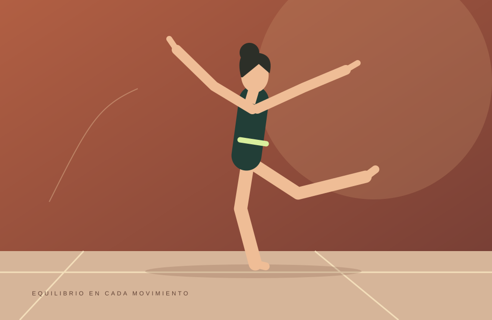

CONTROL + EXPRESIÓN
Gimnasia
Combina fuerza, flexibilidad y coordinación. En sus distintas modalidades, el cuerpo se convierte en una forma de expresión a través de saltos, equilibrios y secuencias de movimiento.
Explorar la Federación Internacional de Gimnasia